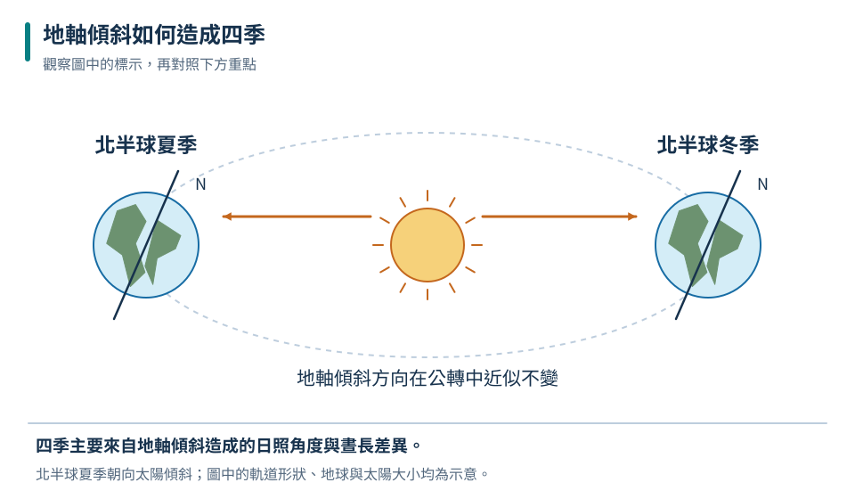
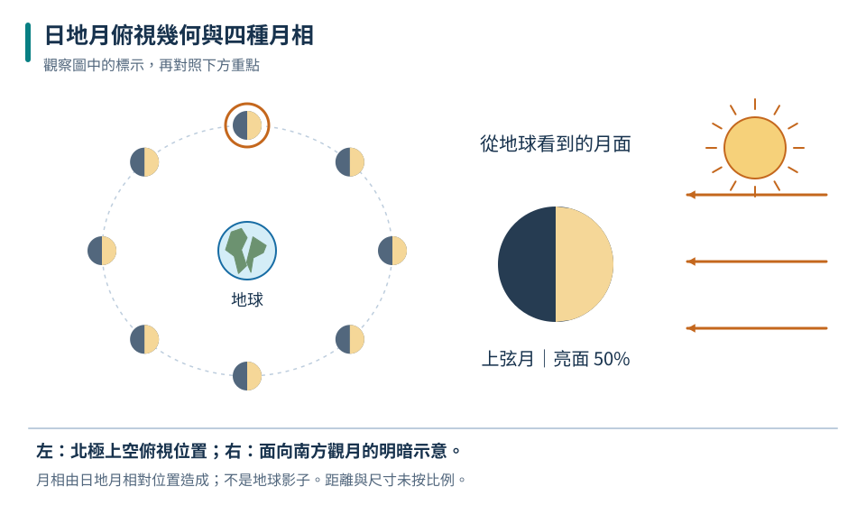
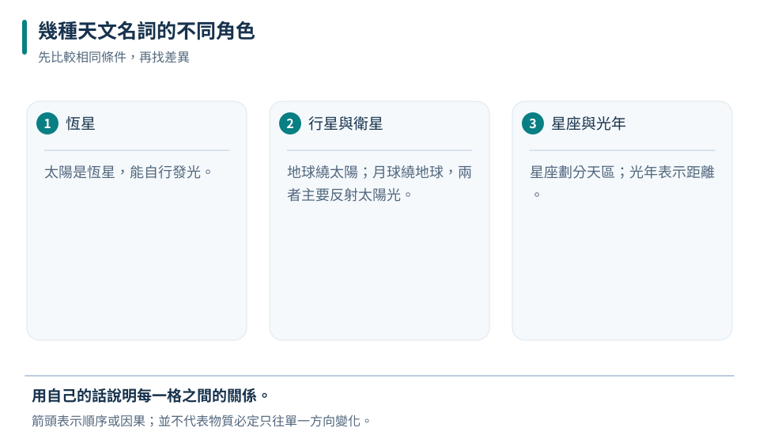

角度說清楚
23.5° 是地軸相對軌道面垂線的傾角；相對軌道平面約為 66.5°。
九上 · 地科 · 第 7 章
白天黑夜每天交替，月亮卻不是每天同時升起，冬夏的正午影子也不同。這些現象都能用觀測位置與天體運動解釋。這章會標清楚你站在哪個半球、從哪個方向看，逐步拆解四季、月相、日月食和潮汐，再把視野放到太陽系與星空。
先備概念：光沿直線傳播、物體可反射光、圓周、角度與方向、自轉與公轉是不同運動
LEARN & EXPLAIN
地球由西向東自轉，使地面觀察者看見太陽與大部分星體每天大致東升西落。地球同時繞太陽公轉；地軸與公轉軌道平面的垂直方向夾約 23.5°，且一年中地軸在太空中的方向近似不變。教材畫圖若從北側俯視，自轉、公轉常畫成逆時針；換到另一面看，視覺方向就會相反。
北半球向太陽傾斜時，北半球多數地區白晝较長、正午太陽較高，地面一天吸收的太陽能通常較多，形成夏季；南半球同時為冬季。四季主因是地軸傾斜配合公轉，不能用地日距離解釋南北半球同時出現相反季節。春秋分太陽直射赤道，各地晝夜大致等長；實際日出日落還受大氣折射等影響。
23.5° 是地軸相對軌道面垂線的傾角；相對軌道平面約為 66.5°。
同地同高直杆，正午太陽越高，影子越短；要在真正的當地太陽正午比較。
六月北半球夏季、南半球冬季；十二月相反，赤道附近季節表現未必同樣強烈。
| 節氣附近 | 太陽直射緯度 | 正午高度 | 白晝 |
|---|---|---|---|
| 夏至 | 北緯約 23.5° | 全年較高 | 全年較長 |
| 春分、秋分 | 赤道 | 介於冬夏之間 | 約 12 小時 |
| 冬至 | 南緯約 23.5° | 全年較低 | 全年較短 |

用來比較同一地點；不可直接套成南半球的冬夏對照。
與地軸傾斜造成季節日照差異一致，不表示太陽每天繞地球的距離變短。
四季不是夏天整個地球離太陽最近造成的；若是主因，南北半球應同時變暖，與觀察不符。
LEARN & EXPLAIN
月球本身不發出可見光，主要反射太陽光。除月食等特殊情形，月球始終約有一半被太陽照亮；月相改變，是地球上的我們看見受光部分的比例改變。朔時月球位於太陽方向，望時在反太陽方向，上下弦時日月方向大約相差直角。月相循環約 29.5 天；月球自轉與繞地球公轉週期相近，所以我們主要看見同一面。
日食是月球遮住太陽，需要朔且三者足夠對齊；月食是月球進入地球影子，需要望且對齊。月球軌道面相對地球公轉軌道面傾斜約 5°，所以不是每月都有食。潮汐與月球、太陽造成的引潮作用有關；朔望附近通常潮差較大稱大潮，弦月附近通常潮差較小稱小潮。實際潮時與潮高還受海岸形狀、水深和天氣影響，要查當地預報。
平常半月、眉月是觀看受光面的角度不同，不是地球把光擋掉。
理想近似：滿月日落升起，上弦約中午升起、午夜落下，下弦約午夜升起。
潮差＝滿潮水位－相鄰乾潮水位；大潮不是只指某一次滿潮。

月球位置依朔→上弦→望→下弦繞行；圖上每顆月球右半受光，地球看到的比例卻不同。
甲潮差較大，較符合大潮；單靠水位不能精確定出農曆日期。
朔望是發生日月食的必要條件之一，並非充分條件；還須在三維空間足夠對齊。
LEARN & EXPLAIN
太陽是能自行發光發熱的恆星，行星主要反射恆星光，並繞太陽運行；衛星則繞行星等天體運行。太陽系八大行星由內向外為水星、金星、地球、火星、木星、土星、天王星、海王星。內側四顆以岩石為主，外側四顆為巨行星；冥王星屬矮行星，分類不是依肉眼亮度決定。
星座是從地球看星星形成的視線圖案和劃定的天區；同一星座的恆星可能相距非常遠，並非真的貼在同一平面。星空每天的視運動主要來自地球自轉，而同一時刻不同季節看見不同星空，與地球公轉造成夜面朝向改變有關。光年是光一年傳播的距離單位，不是時間；觀測遙遠星光相當於接收過去發出的訊息。
看起來亮，可能因本身亮、距離近或兩者共同影響。
課本行星圖常放大星球並縮小距離；不能直接用圖上大小比較真實比例。
觀測太陽與日食須使用合格太陽觀測設備，不能直接盯視或用一般墨鏡代替。

不要把天空圖案當成實際緊密排列，也不要把光年當成物體年齡。
不能只用目視亮度判定距離。
月球一直以同一面朝向地球不代表沒有自轉；若沒有自轉，繞地球一周就會讓我們看見不同面。
TRY, OBSERVE, EXPLAIN
REVIEW
23.5° 是地軸相對軌道面垂線的傾角；相對軌道平面約為 66.5°。
回到這一節複習平常半月、眉月是觀看受光面的角度不同，不是地球把光擋掉。
回到這一節複習看起來亮，可能因本身亮、距離近或兩者共同影響。
回到這一節複習CHAPTER TEST
先獨立作答，再看解析。中難與難為編者估計，尚未經學生實測校準。